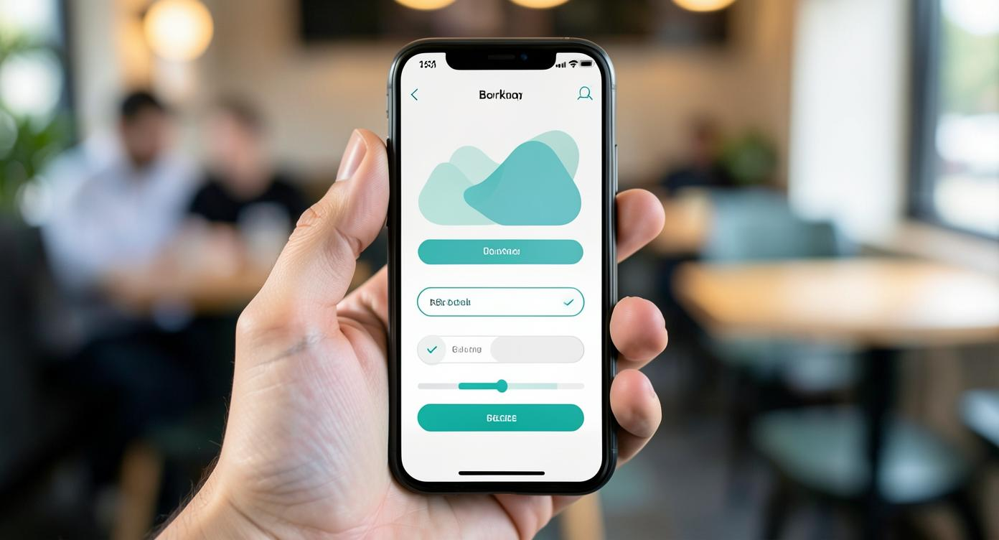

Self-Service Apps Kya Hain? Users Khud Kaam Karein, Load Kam

कोई ग्राहक form भरने के लिए आपको ईमेल करता है, आपकी टीम उसे copy-paste करके system में डालती है, फिर status पूछने का फोन आता है। यह चक्र हर छोटे business में चलता है और हर बार एक ही जगह समय खर्च होता है। self-service apps इसी चक्र को तोड़ने का तरीका हैं — उपयोगकर्ता खुद वह काम करता है जो पहले आपकी टीम करती थी।
इस आर्टिकल में मैं बताऊँगा कि self-service app क्या है और portal या chatbot से कैसे अलग है, यह क्यों काम करता है, इसे बनाने के छह ज़रूरी हिस्से कौन से हैं, design और security के कौन से नियम हैं, adoption कैसे बढ़ाई जाती है, और किन आंकड़ों से पता चलता है कि यह सच में फायदा दे रहा है।
छोटा जवाब: self-service app वह interface है जहाँ उपयोगकर्ता बिना किसी कर्मचारी की मदद के अपना काम पूरा करता है — जैसे booking, claim, payment, address बदलना या status देखना। इसमें तीन चीज़ें ज़रूरी हैं: साफ पहचान (login), छोटा और सीधा flow, और हर कदम पर स्थिति की जानकारी।
Self-service app kya hai
Self-service का मतलब है उपयोगकर्ता को सक्षम बनाना, उसकी जगह काम करना नहीं। अच्छा self-service app वह नहीं जो हर चीज़ दिखाता है, बल्कि वह है जो उपयोगकर्ता को कम से कम कदमों में उसके मन की जगह पहुँचा देता है।
इसे तीन तरह से देखा जा सकता है — ग्राहक के लिए (जहाँ वह अपना order, bill या ticket देखता है), कर्मचारी के लिए (जहाँ वह अपनी leave, expense या IT request भेजता है), और साझेदार के लिए (जहाँ dealer या vendor अपना stock और payment देखता है)। तीनों में तर्क एक ही है: जानकारी और काम को सीधे उस व्यक्ति के हाथ में देना जिसका वह काम है।
Portal, app और chatbot में फर्क
Portal आम तौर पर web पर खुलने वाला पुराना login area होता है, जिसमें बहुत सारे links और कम मार्गदर्शन होता है। App उसी काम को mobile के लिए बनाया गया छोटा, केंद्रित अनुभव होता है। Chatbot बातचीत के रास्ते काम करता है, पर हर काम बातचीत से नहीं होता — form भरना अक्सर तेज़ होता है।
असली सवाल यह नहीं कि कौन सा रूप चुनें, बल्कि यह है कि उपयोगकर्ता का काम किस रूप में सबसे कम रगड़ के साथ पूरा होगा। जहाँ जानकारी ढूँढनी है वहाँ खोज और सूची ठीक है, जहाँ आवेदन भरना है वहाँ step-by-step form ठीक है, और जहाँ सवाल अस्पष्ट है वहाँ chat मदद कर सकता है।
रोज़ के उदाहरण
- बैंक में passbook update, cheque book request या FD की जानकारी।
- ई-कॉमर्स में order tracking, return request और invoice download।
- बीमा में claim की स्थिति और दस्तावेज़ upload।
- कंपनी में leave apply, payslip और IT ticket।
- यात्रा में seat बदलना, web check-in और refund status।
इन सब में एक बात समान है — सवाल बार-बार वही आता है और जवाब पहले से system में मौजूद है। self-service का काम उस जवाब तक सीधा रास्ता बनाना है।
Kyun kaam karta hai: teen fayde
लागत और समय की बचत
जब ग्राहक खुद status देख लेता है, तो एक कॉल, एक ईमेल और उसका जवाब बचता है। छोटी टीम के लिए यह सीधा समय है जो बड़े कामों में लग सकता है। बचत का असली आंकड़ा "कितने कॉल बचे" नहीं, "प्रति 1000 उपयोगकर्ता कितने support tickets आए" होता है।
गति और भरोसा
उपयोगकर्ता को रात में भी जवाब मिलता है, और वह अपने काम की स्थिति खुद देख सकता है। जब status दिखता है, तो "क्या हुआ" वाले फोन कम होते हैं। भरोसा जानकारी से बनता है, वादों से नहीं।
डेटा और सुधार
self-service से पता चलता है कि लोग कहाँ अटकते हैं। कौन सा step छोड़ देते हैं, कौन सा field बार-बार गलत भरते हैं, किस समय सबसे ज़्यादा requests आती हैं। यह डेटा process सुधारने के लिए सोने जैसा है, बशर्ते इसे देखा जाए।
Chhe building blocks
यह चीज़ें चाहे web app हो या mobile, हर self-service product में चाहिए। इनमें से एक भी कमज़ोर हो, तो उपयोगकर्ता फोन करेगा।
- पहचान। Login, OTP या OAuth — तरीका जो भी हो, उपयोगकर्ता की पहचान और उसका data साफ जुड़ा हो।
- मार्गदर्शित flow। एक समय में एक सवाल, आगे-पीछे जाने की सुविधा, और हर step पर बचा हुआ काम दिखे।
- स्थिति (status)। आवेदन किस चरण में है, अगला कदम क्या है, और कितना समय लगेगा।
- सूचना। SMS, WhatsApp या ईमेल — बदलाव होने पर अपने आप सूचना, ताकि उपयोगकर्ता बार-बार check न करे।
- मदद। हर screen पर एक साफ रास्ता — FAQ, chat या फोन — जहाँ अटकने पर सहायता मिले।
- रिकॉर्ड। किसने कब क्या किया, इसका log। यह support और audit दोनों के लिए ज़रूरी है।
इन छह के बाद एक सातवाँ हिस्सा जुड़ता है — integration। अगर आपका app backend से बात नहीं करता, तो वह सिर्फ खूबसूरत form है। भुगतान, सत्यापन और status update तीनों असली systems से जुड़े होने चाहिए।
Design ke 7 rules
पहला — कम से कम field। जो जानकारी आपके पास पहले से है, उसे दोबारा मत माँगें। हर extra field एक कारण है उपयोगकर्ता के भागने का।
दूसरा — एक स्क्रीन, एक काम। लंबा form छोटे चरणों में बाँटें। शुरू में ही सब कुछ दिखाने से लोग डर जाते हैं।
तीसरा — गलती से उबारें। गलत OTP, अधूरा नंबर, बड़ी फाइल — हर गलती पर साफ भाषा में बताएँ कि क्या करना है, और data मिटाएँ नहीं।
चौथा — mobile पहले। भारत में ज़्यादातर लोग फोन से आते हैं। छोटी screen पर बटन अंगूठे तक पहुँचे, और text पढ़ने लायक हो।
पाँचवाँ — रुकने पर भी स्थिति दिखे। अगर सत्यापन में दो दिन लगेंगे, तो यही लिखें। चुप्पी सबसे बड़ी शिकायत बनती है।
छठा — भाषा आसान। "Beneficiary creation pending KYC validation" जैसी भाषा की जगह "आपका खाता जोड़ा जा रहा है, 24 घंटे में पूरा होगा" लिखें। हिंदी और English दोनों में विकल्प रखें।
सातवाँ — एक साफ निकास। काम छोड़ना पड़े तो data सुरक्षित रहे और बाद में वहीं से शुरू हो सके। जबरदस्ती पूरा कराने से लोग झूठी जानकारी भरते हैं।
Security ke 6 controls
Self-service का मतलब है उपयोगकर्ता के हाथ में सीधा access। इसलिए security को बाद में नहीं, design के साथ जोड़ें।
| Control | क्या करता है | ध्यान दें |
|---|---|---|
| मजबूत login | OTP, password या SSO से पहचान | OTP की कोई सीमा न हो तो brute force संभव |
| Role-based access | हर व्यक्ति सिर्फ अपना data देखे | URL बदलकर दूसरे का data न खुले |
| Rate limiting | बार-बार request रोके | बिना इसके OTP और API दोनों पर हमला आसान |
| File validation | upload की जाँच — type, size, scan | सिर्फ extension देखना काफी नहीं |
| Audit log | हर बदलाव का रिकॉर्ड | Log में personal data कम रखें |
| Session expiry | लंबे समय तक खुला login बंद करे | सार्वजनिक कंप्यूटर पर सबसे ज़रूरी |
इनमें सबसे ज़्यादा नज़रअंदाज़ की जाने वाली चीज़ है authorization — यानी यह जाँचना कि उपयोगकर्ता वह काम करने का हक रखता है या नहीं। बहुत से apps login ठीक करते हैं पर screen के पीछे यह नहीं देखते कि माँगा गया record उसी का है या नहीं।
Adoption kaise badhayein
अच्छा app बन जाना आधा काम है; उसका इस्तेमाल होना बाकी आधा। शुरुआत में लोग पुराने तरीके पर लौट जाते हैं, क्योंकि वह परिचित है।
पहला — entry point आसान करें। जहाँ उपयोगकर्ता पहले से है वहीं से शुरुआत दें — WhatsApp link, SMS, invoice पर QR, या ऐप के home screen पर सीधा बटन।
दूसरा — पहला काम आसान रखें। पहली बार में सबसे सरल काम कराएँ, जैसे bill download। एक बार सफल अनुभव के बाद भरोसा बनता है।
तीसरा — staff को साथ रखें। जो टीम पहले वह काम करती थी, वही अब मार्गदर्शक बने। उन्हें बताएँ कि app उनकी नौकरी नहीं ले रहा, उनका समय बचा रहा है — और उनके लिए मुश्किल मामलों का रास्ता खुला रखें।
चौथा — सीखने का सामान दें। 40 सेकंड का वीडियो, WhatsApp पर भेजने योग्य एक नोट, और एक छोटा FAQ। लंबे manual कोई नहीं पढ़ता।
पाँचवाँ — धीरे-धीरे बंद करें पुराना रास्ता। पहले दोनों चलाएँ, फिर पुराने रास्ते का समय घटाएँ। एक दिन में सब बंद करने से लोग नाराज़ होते हैं और शिकायतें बढ़ती हैं।
Metrics: kaise pata chalega ki kaam kar raha hai
| माप | क्या बताता है | स्वस्थ संकेत |
|---|---|---|
| Completion rate | शुरू करने वालों में से कितने पूरा करते हैं | हर छोड़े गए step पर नज़र रखें |
| Time to complete | एक काम में लगने वाला समय | पहले से कम होना चाहिए |
| Tickets प्रति 1000 उपयोगकर्ता | support पर बोझ | धीरे-धीरे गिरे, अचानक नहीं |
| Repeat usage | लोग दोबारा आते हैं या नहीं | दूसरी बार आना भरोसे का संकेत |
| Error rate | किन fields में गलती होती है | design सुधार का सीधा संकेत |
इन पाँचों को शुरुआत से पहले नापें, वरना बाद में तुलना का कोई आधार नहीं रहेगा। सबसे उपयोगी आंकड़ा completion rate है, क्योंकि वह सीधे बताता है कि flow कहाँ टूट रहा है।
5 galtiyan jo sabse aam hain
पहली — पुराने process की नकल करना, सिर्फ उसे screen पर लाना। अगर process में पाँच signatures थे, तो app में भी पाँच क्यों? दूसरी — status दिखाना भूल जाना। तीसरी — error message में technical code दिखाना। चौथी — बिना analytics के launch करना, फिर अंदाज़े से सुधार करना। पाँचवीं — support का रास्ता छिपा देना, यह सोचकर कि "अब किसी को मदद नहीं चाहिए"।
पाँचवीं सबसे खतरनाक है। self-service का मतलब यह नहीं कि सहायता की ज़रूरत खत्म हो गई। जब लोग अटकते हैं और मदद का रास्ता नहीं दिखता, तो वे app छोड़ देते हैं — और फिर कभी नहीं लौटते।
मैंने इस अनुभव से क्या सीखा
सबसे बड़ी सीख यह रही कि self-service की सफलता feature list से नहीं, छोटे-छोटे विवरणों से तय होती है। जिस app में हमने सिर्फ status और अगला कदम साफ दिखाया, वहाँ support tickets लगभग आधे हो गए — बिना कोई नया feature जोड़े।
दूसरी सीख — पहला काम सबसे आसान रखें। जब हमने शुरुआत bill download से की, तो लोगों ने बाद में claim और address बदलना भी अपने आप सीख लिया। जब हमने सीधे मुश्किल काम से शुरुआत की, तो लोग पहली स्क्रीन पर ही रुक गए।
तीसरी सीख — staff को दुश्मन न बनाएँ। जिन टीमों ने अपने कर्मचारियों को app का guide बनाया, वहाँ adoption तेज़ रही। जहाँ staff को लगा कि यह उनकी जगह ले रहा है, वहाँ उन्होंने चुपचाप लोगों को पुराने तरीके की सलाह दी।
अक्सर पूछे जाने वाले सवाल
क्या self-service app बनाने के लिए बड़ी टीम चाहिए?
नहीं। शुरुआत एक flow, एक integration और एक status page से हो सकती है। ज़रूरी है कि पहला flow सच में रोज़ का काम हो, ताकि उपयोग दिखे और सुधार का आधार बने।
क्या chatbot self-service app की जगह ले सकता है?
कुछ हद तक। जहाँ सवाल खुले हैं वहाँ chat अच्छा है, पर form भरने, document upload और payment जैसे कामों में सीधा interface तेज़ और साफ रहता है। दोनों को साथ रखना सबसे व्यावहारिक है।
सबसे पहले कौन सा flow बनाएँ?
वह जो सबसे ज़्यादा बार आता है और जिसका जवाब पहले से system में है — जैसे status, invoice या receipt। इसमें जोखिम कम होता है और फायदा तुरंत दिखता है।
क्या पुराना portal बंद कर देना चाहिए?
एक साथ नहीं। पहले नए app पर समानांतर चलाएँ, दो-तीन महीने के आंकड़े देखें, फिर पुराने रास्ते को धीरे-धीरे सीमित करें। जल्दबाज़ी में बंद करने से शिकायतें बढ़ती हैं।
सुरक्षा की सबसे ज़रूरी जाँच कौन सी है?
यह पक्का करना कि हर request में उपयोगकर्ता सिर्फ अपना ही data देख या बदल सके। login सही होना काफी नहीं — screen के पीछे भी ownership जाँचनी चाहिए।
अगर आप अपने process को पहले सरल बनाना चाहते हैं, तो Agile methodology की गाइड और SaaS outsourcing पर यह आर्टिकल क्रम तय करने में मदद करेंगे। Status और notification को अपने आप चलाने के लिए event-driven architecture वाला आर्टिकल पढ़ें।
आगे पढ़ें: self-service design के सिद्धांतों के लिए Nielsen Norman Group का self-service लेख और accessibility की जाँच के लिए W3C WCAG 2.2 quick reference देखें।